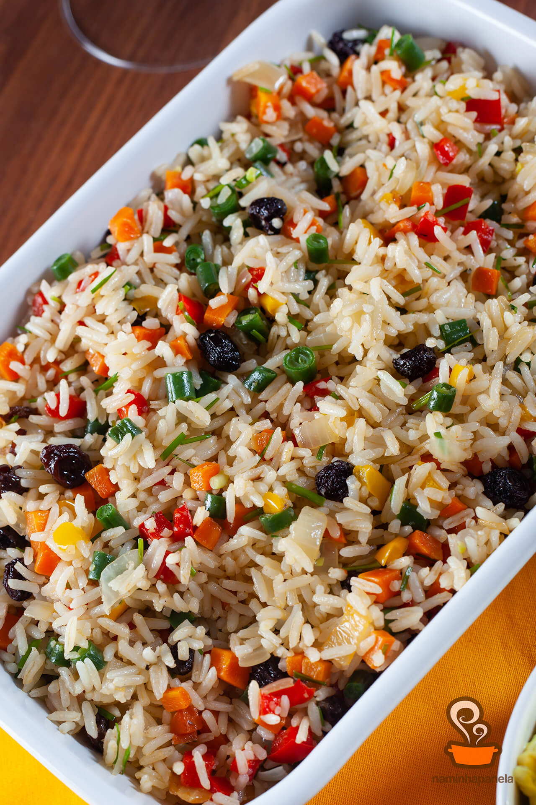

Arroz a grega

30m
INGREDIENTES
- 3 xícaras de arroz
- 1 caixa de uvas-passas
- 5 colheres de ervilha
- óleo
- sal a gosto
- salsa a gosto
- cenoura a gosto
- 6 xícaras de água
- queijo parmesão ralado
- 1 colher de manteiga
- pimentão a gosto
- cebola a gosto
- cebolinha verde a gosto
MODO DE PREPARO
- Leve uma panela ao fogo com água, sal, um fio de óleo e espere ferver.
- Adicione o arroz lavado e mexa bem.
- Diminua o fogo, deixe a água secar e retire o arroz do fogo.
- Em uma panela, leve uma caçarola ao fogo com a medida de manteiga e frite as passas e as ervilhas.
- Despeje a mistura em uma tigela funda e junte a cebolinha verde, a cenoura, o pimentão, a cebola, a salsa e o parmesão.
Voltar para a página principal?